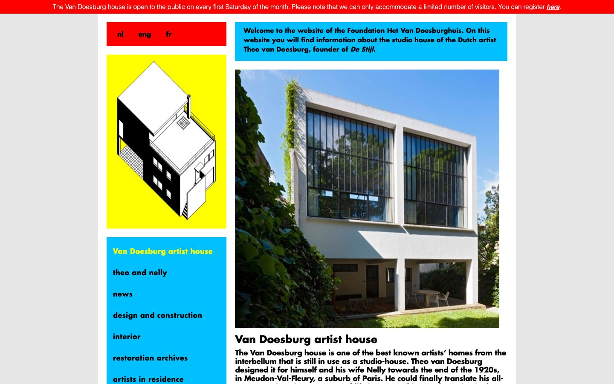

References / Website / 368
Van Doesburghuis website
The foundation site for Theo van Doesburg’s studio house in Meudon arranges its content in flat red, yellow, and bright blue panels with square corners.
- Source
- vandoesburghuis.com
- Creator
- Stichting Het Van Doesburghuis
- Style
- De Stijl (agent-proposed, not yet reviewed by a person)
- Moods
- Bright, orthogonal, informal
- Evidence
- Captured with
tools/capture.mjs(headless Chrome, 1440 × 900) on 28 September 2026 and inspected. The screenshot shows the first viewport; the measurement covers up to four screens. The requested URL https://www.vandoesburghuis.com/ redirected to the English home page. - Reviewed
- Rights
- Third-party work, stored with credit for commentary. License: unverified. Rights policy
Context
The page states that the foundation runs the studio house that Theo van Doesburg designed for himself and Nelly van Doesburg in Meudon-Val-Fleury at the end of the 1920s. vandoesburghuis.com.
Observed
- A red bar runs across the top of the page with a notice about opening days.
- A white column on a light gray background holds rectangular panels: a red language panel, a yellow panel with a black-and-white axonometric drawing of the house, and a bright blue navigation panel.
- A bright blue welcome panel and a large color photograph of the white house with tall steel windows fill the right column.
- Navigation and headings are set in bold Futura in lowercase or sentence case; the current item is yellow on blue.
- No panel has rounded corners, a shadow, or a gradient.
Why it belongs
The site takes the palette and flat rectangles from the movement but not the black line grid, so it reads as color blocking more than as a neoplastic composition. The axonometric drawing adds diagonals, which belong to van Doesburg’s later Elementarism and his architectural drawings.
Computed styles find 2 hues (red and bright blue); the yellow is mostly in the image. There are no CSS borders to measure.
Borrow
Separate navigation, language choice, and intro text into flat panels of one primary each, and keep every corner square.
Measured
Machine-extracted by tools/extract-traits.js on . Full measurement.
- Type families
- Conv_futura-normal (71%), Conv_Futura-Bold (25%), Helvetica (3%)
- Type scale ratio
- 1.41
- Median radius
- 0 px
- Mean chroma
- 0.22
- Palette
- #e6e6e6 34%
- #ffffff 25%
- #00c0ff 20%
- #000000 20%
- #ff0000 2%
- #ffff00 0%

